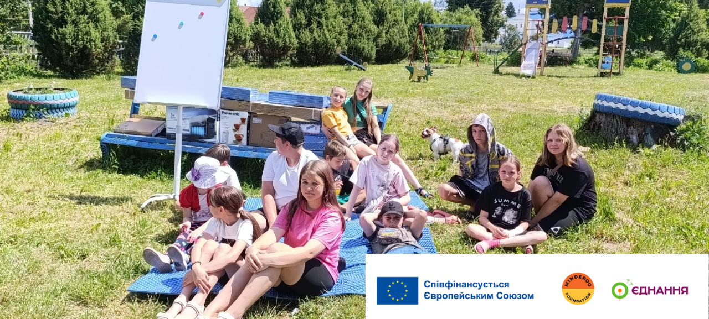
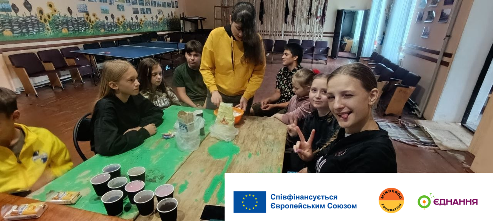
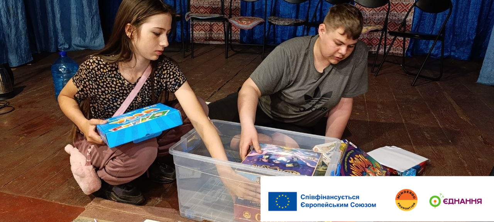
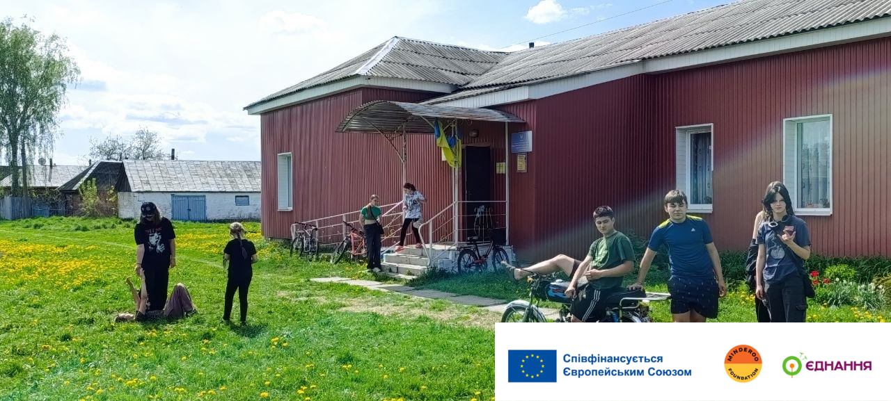
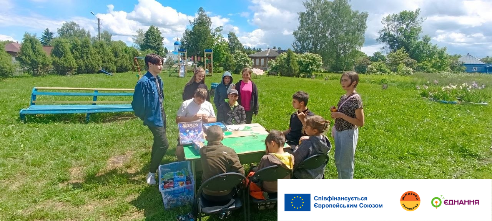
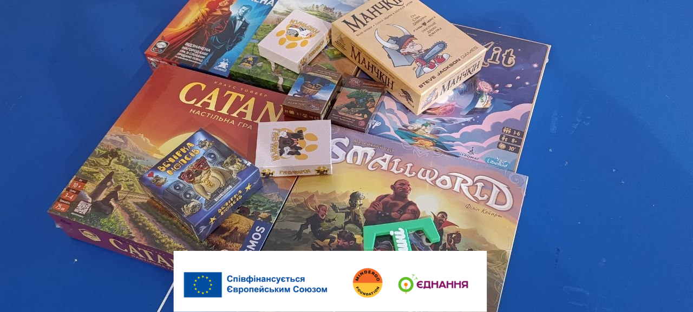
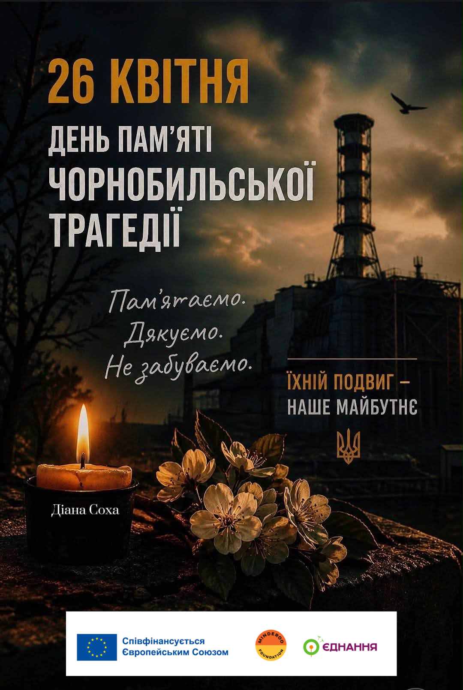
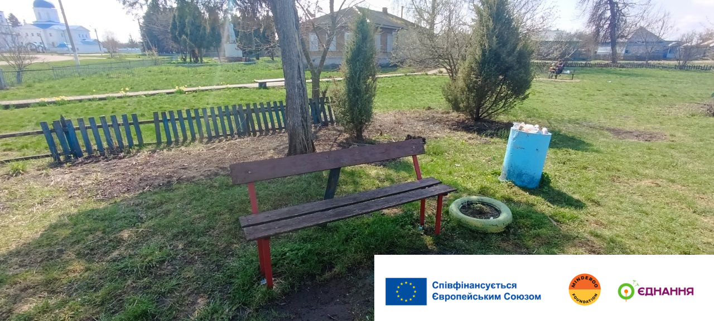

Нове обладнання — нові можливості для «Тутешніх»
Молодіжний простір «Тутешні» отримав нове обладнання — ноутбук, проєктор, екран та інші ресурси для навчання, творчості й спільних ініціатив.
Читати даліАрхів подій та оновлень організації «Сила інтелекту».

Молодіжний простір «Тутешні» отримав нове обладнання — ноутбук, проєктор, екран та інші ресурси для навчання, творчості й спільних ініціатив.
Читати далі
Творчий майстер-клас, де діти розписували метеликів із солоного тіста та перетворювали їх на яскраві сувеніри.
Читати далі
На підсумковій зустрічі учасники підбили результати навчального року, поділилися досягненнями та планами на літо.
Читати далі
Зустріч групи підтримки на тему гарного настрою та взаємної підтримки в команді.
Читати далі
Неформальна зустріч учасників: спілкування, чай і кава, легка активність та танці.
Читати далі
Вечір настільних ігор для молоді: командна гра, знайомства та відпочинок.
Читати далі
Спільний перегляд та обговорення фільму про події в Чорнобилі та їхній урок для сьогодення.
Читати далі
Старт програми: Розпочинаємо роботу над нашим молодіжним проєктом
Читати далі